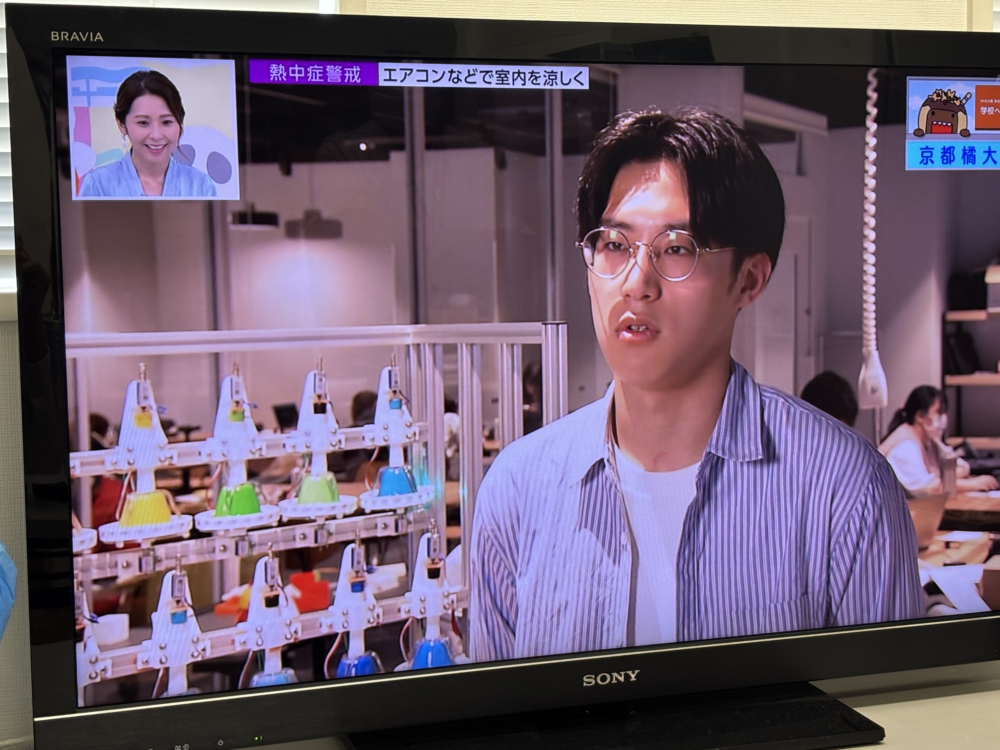
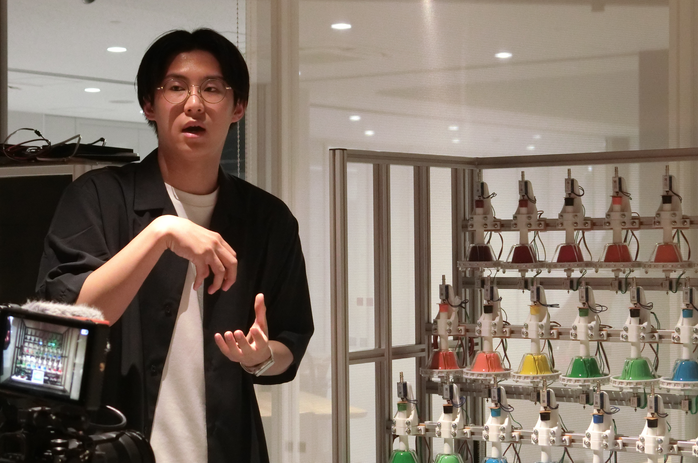
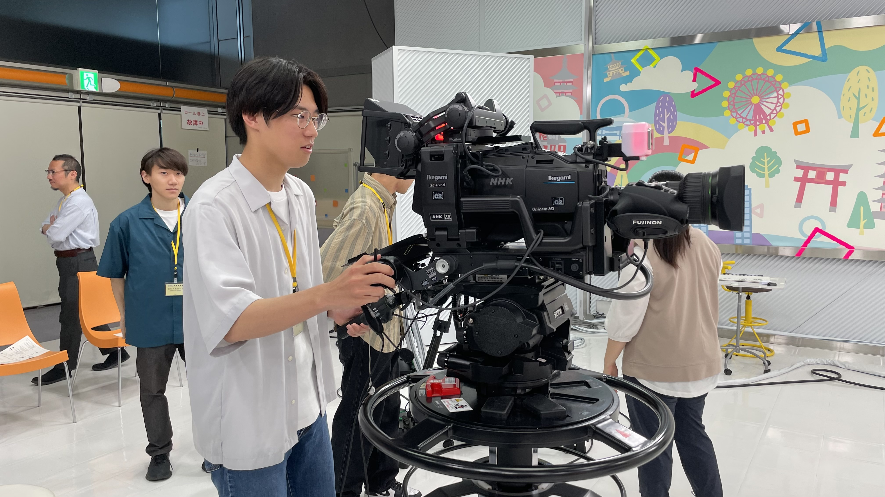

NHKで放送された番組に出演しました

2025年6月30日（月）、NHK大阪で放送された『「ぐるっと関西おひるまえ」学校へどーも！』の番組に出演しました。 この番組では、京都橘大学の施設紹介や研究活動に関する紹介を行っており、私もその一環として出演させていただきました。 番組内では、本学の学生が主体的にものづくりを行うことができる施設の紹介の中で、ハンドベル自動演奏装置が取り上げられました。 実際に装置を演奏するシーンの撮影も行われ、私自身も装置の説明や制作の背景についてお話ししました。


放送当日にNHK大阪のスタジオにも招待いただき、実際に生放送に少しだけ出演させていただけました。 リハーサル終了後、時間があり暇をしていると、親切な撮影スタッフの方がNHKで実際に放送で使用されているカメラを触らせて下さりました。 触ってみて、びっくり。ハイビジョンカメラには、オートフォーカスはなく全てマニュアルフォーカスでした。 （高校では、写真部で一眼レフカメラを使っていましたが、オートフォーカスしか使ったことがなかったので、マニュアルフォーカスは初めてでした） 今回の出演を通じて、貴重な経験をさせていただきました。関係者の皆様では、心より感謝申し上げます。